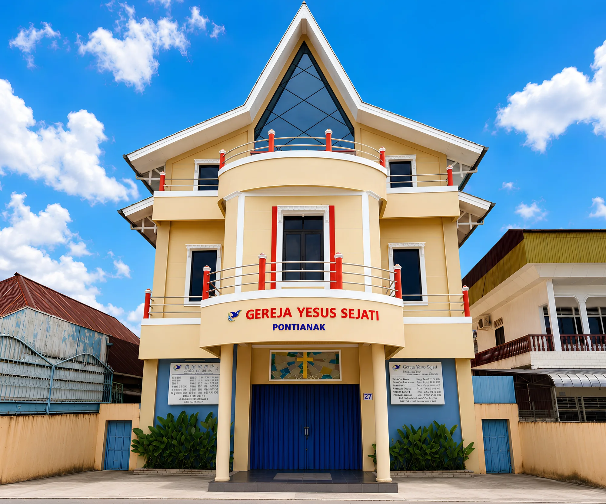

nightlight
Ibadah Sabat Awal · Jumat Malam
18:00 – 20:00
Ibadah persekutuan setiap Jumat malam untuk menyambut hari Sabat bersama jemaat GYS Pontianak.

Gereja Yesus Sejati Pontianak
Satu ruang untuk melayani, bertumbuh, dan terhubung dalam iman —
melalui layanan digital bagi jemaat dan pelayan Tuhan.
format_quotekeyboard_double_arrow_downTetapi Yesus berkata: "Biarkanlah anak-anak itu, janganlah menghalang-halangi mereka datang kepada-Ku; sebab orang-orang yang seperti itulah yang empunya Kerajaan Sorga."
Matius 19:14
Aplikasi yang dapat diakses oleh seluruh jemaat secara terbuka.
Profil Sekolah Minggu GYS Pontianak: jenjang kelas, jadwal ibadah, galeri aktivitas, dan pendaftaran.
Buka Layanan arrow_forwardKumpulan kidung rohani digital untuk mendukung pujian dan penyembahan dalam ibadah.
Buka Layanan arrow_forwardPerangkat pelayanan yang digunakan oleh panitia dan pelayan Tuhan — memerlukan akun.
Pencatatan dan pengelolaan kas pemuda GYS Pontianak.
Buka Layanan arrow_forwardPresensi guru Sekolah Minggu dengan verifikasi lokasi dan riwayat kehadiran.
Buka Layanan arrow_forwardPresensi karyawan, kalender pastoral, dan pengumuman pelayanan.
Buka Layanan arrow_forwardMari beribadah dan bertumbuh bersama dalam persekutuan jemaat GYS Pontianak.
Ibadah persekutuan setiap Jumat malam untuk menyambut hari Sabat bersama jemaat GYS Pontianak.
Ibadah Sekolah Minggu yang digelar setiap Sabtu pagi di Sekolah Kristen Kanaan Kubu Raya.
Ibadah Sabat pagi setiap Sabtu untuk beribadah dan mendengarkan firman Tuhan bersama jemaat.
Ibadah Sabat sore setiap Sabtu sebagai persekutuan penutup hari Sabat bersama jemaat.
Gereja Yesus Sejati Pontianak hadir untuk membawa jemaat bertumbuh dalam iman melalui firman Tuhan, pujian, doa, dan kasih. Portal ini menjadi pintu masuk bagi layanan-layanan digital gereja — dari kidung rohani hingga perangkat pelayanan internal untuk para pelayan Tuhan.
Mari bertumbuh bersama: layani, beribadah, dan terhubung dalam satu komunitas iman.
Jelajahi LayananKeyakinan iman Gereja Yesus Sejati, bersumber dari kebenaran Alkitab.
Ikuti kabar dan kegiatan GYS Pontianak melalui media sosial resmi.